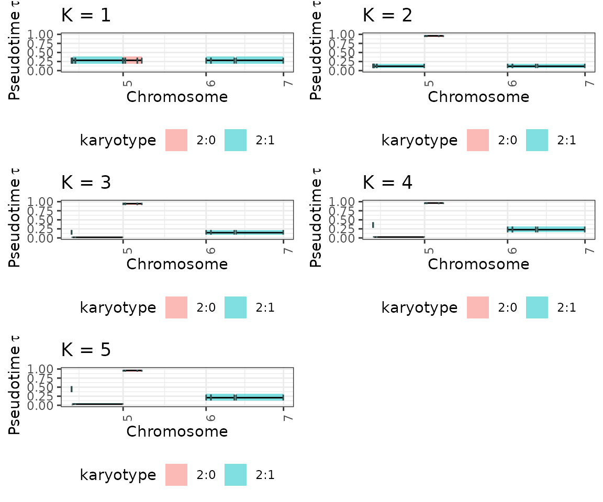

4. Timing Clonal Peaks in a hierarchical fashioin
a4_Multiple_segment_timing.RmdThe _fit_h function in the tickTack package
estimates the timing of K clonal peaks in cancer genome
sequencing data according to which a clustering can be performed. This
vignette describes the functionality of the fit_h function,
including input requirements, output, and an example analysis using the
tickTack::pcawg_example_2 dataset.
Overview of the fit_h Function
The fit_h function uses a hierarchical model to fit
clonal peaks in sequencing data considering the grouping tructure of the
chromosomes segments. It identifies segments of the genome with specific
karyotypes and mutations that meet the input criteria, then estimates
the timing of the groups of events and assign each segment to a
clock.
Key Parameters
-
x: a CNAqc object with mutations, cna and metadata -
max_attempts: Number of times the variational inference is repeated to avoid local minima. -
INIT: Logical flag to pass some initialization values tothe variational inference, default isTRURE. -
tolerance: tolerance between two value of subsequent iterations of gradient ascent pn elbo, default is0.01. -
possible_k: A character vector of possible karyotypes, defaulting toc("2:1", "2:2", "2:0"). -
alpha: Significance level, defaulting to0.05. -
min_mutations_number: Minimum number of mutations required for analysis, defaulting to2. -
n_components: If0, then the strategy to choose the #components follows the default procedure, otherwise the inference is repeated for K equal up to a maximun of n_components.
Output
The function returns a list containing:
-
data: The data used to perform the inference after selecting the ones that respect the assumptions to be used in the model. -
draws_and_summary: List of 3 for each K the inference is performed with. draws are available both for the clocks and for the weights Summary statistics for the estimated timing of clonal peaks. -
log_lik_matrix_list: Summary statistics for the estimated timing of clonal peaks. -
elbo_iterations: Summary statistics for the estimated timing of clonal peaks.
If no segments meet the criteria, the function returns
NULL.
Analyzing tickTack::pcawg_example_2
We will use the tickTack::pcawg_example_2 dataset to
demonstrate how to use the fit_h function.
Input Data
The tickTack::pcawg_example_2 dataset contains three
components:
-
mutations: Mutation data. -
cna: Copy number alterations (CNA). -
metadata: Sample metadata, including tumor purity.
Preview the data:
library(tickTack)
# View example dataset components
mutations <- tickTack::pcawg_example_2$mutations
cna <- tickTack::pcawg_example_2$cna
metadata <- tickTack::pcawg_example_2$metadata
head(mutations)## chr from to ref alt DP NV VAF
## 1 chr1 1018754 1018754 C C 51 24 0.4705882
## 2 chr1 1107556 1107556 C C 53 17 0.3207547
## 3 chr1 1127192 1127192 C C 78 13 0.1666667
## 4 chr1 1255263 1255263 C C 66 23 0.3484848
## 5 chr1 1474126 1474126 C C 68 17 0.2500000
## 6 chr1 1532289 1532289 G G 39 6 0.1538462
## sample NR Hugo_Symbol Strand
## 1 3b7810f7-f8ff-4d62-b766-3ba06170194c 27 C1orf159 +
## 2 3b7810f7-f8ff-4d62-b766-3ba06170194c 36 TTLL10 +
## 3 3b7810f7-f8ff-4d62-b766-3ba06170194c 65 TTLL10 +
## 4 3b7810f7-f8ff-4d62-b766-3ba06170194c 43 CPSF3L +
## 5 3b7810f7-f8ff-4d62-b766-3ba06170194c 51 TMEM240 +
## 6 3b7810f7-f8ff-4d62-b766-3ba06170194c 33 C1orf233 +
## Variant_Classification Variant_Type Tumor_Seq_Allele2 dbSNP_RS
## 1 Intron SNP T rs188930619
## 2 5'Flank SNP T <NA>
## 3 Intron SNP T <NA>
## 4 Intron SNP T rs552646507
## 5 Intron SNP T rs572658610
## 6 IGR SNP A rs575347755
## dbSNP_Val_Status Matched_Norm_Sample_Barcode Genome_Change
## 1 <NA> 5d5a6488-dc29-4ab5-8a98-e94fd5be113f g.chr1:1018754C>T
## 2 <NA> 5d5a6488-dc29-4ab5-8a98-e94fd5be113f g.chr1:1107556C>T
## 3 <NA> 5d5a6488-dc29-4ab5-8a98-e94fd5be113f g.chr1:1127192C>T
## 4 byFrequency 5d5a6488-dc29-4ab5-8a98-e94fd5be113f g.chr1:1255263C>T
## 5 byFrequency 5d5a6488-dc29-4ab5-8a98-e94fd5be113f g.chr1:1474126C>T
## 6 <NA> 5d5a6488-dc29-4ab5-8a98-e94fd5be113f g.chr1:1532289G>A
## ref_context gc_content i_1000genomes_AF i_1000genomes_ID
## 1 cagGGGGTTACGTCAGGGTCT 0.602 0.00019968 rs188930619
## 2 ccagctcaggcatcagtggct 0.692 NA <NA>
## 3 gtatcccttacgggaaacgaa 0.418 NA <NA>
## 4 gCAAGGGCAGCGCCTGGCAAG 0.652 0.00099840 rs552646507
## 5 GCATGTCACACGCTTAGCAAC 0.587 NA <NA>
## 6 ACTTCGGGGCGGGACTGGAAG 0.607 NA <NA>
## i_Callers i_GERM1000G i_GERMOVLP i_LOWSUPPORT i_NORMALPANEL
## 1 broad,dkfz,muse,sanger NA NA NA NA
## 2 broad,dkfz,muse,sanger NA NA NA NA
## 3 broad,dkfz,muse,sanger NA NA NA NA
## 4 broad,dkfz,muse,sanger NA NA NA NA
## 5 broad,dkfz,muse,sanger NA NA NA NA
## 6 broad,dkfz,muse,sanger NA NA NA NA
## i_NumCallers i_OXOGFAIL i_REMAPFAIL i_SEXF i_VAF i_bPcr i_bSeq i_qual
## 1 4 NA NA NA 0.4706 NA NA None
## 2 4 NA NA NA 0.3208 NA NA None
## 3 4 NA NA NA 0.1667 NA NA None
## 4 4 NA NA NA 0.3485 NA NA None
## 5 4 NA NA NA 0.25 NA NA None
## 6 4 NA NA NA 0.1538 NA NA None
## i_repeat_masker i_signature_N3 i_signature_R1 i_signature_R2 i_snv_near_indel
## 1 <NA> FALSE FALSE FALSE FALSE
## 2 MLT1D FALSE FALSE FALSE FALSE
## 3 MER9a1 FALSE FALSE FALSE FALSE
## 4 <NA> FALSE FALSE FALSE FALSE
## 5 <NA> FALSE FALSE FALSE FALSE
## 6 <NA> FALSE FALSE FALSE FALSE
## i_model_score i_n_vaf Project_Code Donor_ID
## 1 NA NA Kidney-RCC DO46877
## 2 NA NA Kidney-RCC DO46877
## 3 NA NA Kidney-RCC DO46877
## 4 NA NA Kidney-RCC DO46877
## 5 NA NA Kidney-RCC DO46877
## 6 NA NA Kidney-RCC DO46877
head(cna)## chr from to Major minor CCF total_cn star level methods_agree
## 1 chr1 10001 121499999 1 1 1 2 3 a 6
## 2 chr1 121500000 128899999 1 1 1 2 2 d 4
## 3 chr1 128900000 247247500 1 1 1 2 3 a 6
## 4 chr1 247247501 249250620 1 1 1 2 2 d 4
## 5 chr2 66017 90499999 1 1 1 2 3 a 6
## 6 chr2 90500000 96799999 1 1 1 2 3 a 6
## absolute_broad_major_cn absolute_broad_minor_cn absolute_broad_het_error
## 1 1 1 0.03993165
## 2 1 1 0.05000000
## 3 1 1 0.04043537
## 4 NA NA NA
## 5 1 1 0.04002173
## 6 1 1 0.05000000
## absolute_broad_cov_error aceseq_copy_number aceseq_minor_cn aceseq_major_cn
## 1 0.1174128 2.000000 1.000000 1.000000
## 2 0.1000000 2.000000 1.000000 1.000000
## 3 0.1258711 2.000000 1.000000 1.000000
## 4 NA 2.136427 1.068214 1.068214
## 5 0.1149430 2.000000 1.000000 1.000000
## 6 0.3640664 2.000000 1.000000 1.000000
## battenberg_nMaj1_A battenberg_nMin1_A battenberg_frac1_A battenberg_nMaj2_A
## 1 1 1 1 NA
## 2 1 1 1 NA
## 3 1 1 1 NA
## 4 1 1 1 NA
## 5 1 1 1 NA
## 6 1 1 1 NA
## battenberg_nMin2_A battenberg_frac2_A battenberg_SDfrac_A
## 1 NA NA NA
## 2 NA NA NA
## 3 NA NA NA
## 4 NA NA NA
## 5 NA NA NA
## 6 NA NA NA
## battenberg_SDfrac_A_BS battenberg_frac1_A_0.025 battenberg_frac1_A_0.975
## 1 NA NA NA
## 2 NA NA NA
## 3 NA NA NA
## 4 NA NA NA
## 5 NA NA NA
## 6 NA NA NA
## clonehd_copy_number clonehd_minor_cn clonehd_major_cn sclust_nMaj1_A
## 1 2 1 1 1
## 2 NA NA NA NA
## 3 2 1 1 1
## 4 2 1 1 1
## 5 2 1 1 1
## 6 2 1 1 1
## sclust_nMin1_A sclust_frac1_A sclust_nMaj2_A sclust_nMin2_A sclust_frac2_A
## 1 1 1 NA NA NA
## 2 NA NA NA NA NA
## 3 1 1 NA NA NA
## 4 1 1 NA NA NA
## 5 1 1 NA NA NA
## 6 1 1 NA NA NA
## jabba_copy_number jabba_minor_cn jabba_major_cn
## 1 2 1 1
## 2 2 1 1
## 3 2 1 1
## 4 2 1 1
## 5 2 1 1
## 6 2 1 1
metadata## sample purity ploidy purity_conf_mad wgd_status
## 1 3b7810f7-f8ff-4d62-b766-3ba06170194c 0.611 1.924 0.002 no_wgd
## wgd_uncertain
## 1 FALSERunning the fit_h function
We can run the fit_h function on the
tickTack::pcawg_example_2 data to infer the timing of
clonal peaks
# Extract input data
data <- tickTack::pcawg_example_2
tolerance = 0.1
# Run the fit function
data <- fit_h(
x = data,
max_attempts = 2,
INIT = TRUE,
tolerance = tolerance
)Results
The results object that is returned together with the
CNAqc input object contains four components: data,
draws_and_summary, log_lik_matrix_list and
elbo_iterations.
# View summary for a specific K, here K = 2
results <- data$resultsInterpreting the output
We can inspect the main output of interest to understand the timing
of clonal peaks. results$draws_and_summary contains: -
draws the draws from the approximate
posterior distribution of the taus and weights; -
summary a summary with the main statistics
of the approximate posterior distributions; -
summarized_results represents the clock
assignment, a tibble with the estimate of taus for each segment with a
copy number event that has been included in the hierarchical
inference
# View summary for a specific K, here K = 2
results$draws_and_summary[[2]]$summary## # A tibble: 24 × 7
## variable mean median sd mad q5 q95
## <chr> <dbl> <dbl> <dbl> <dbl> <dbl> <dbl>
## 1 tau[1] 0.140 0.135 0.0406 0.0389 0.0799 0.214
## 2 tau[2] 0.952 0.955 0.0169 0.0144 0.921 0.973
## 3 w[1,1] 0.844 0.940 0.215 0.0806 0.299 0.998
## 4 w[2,1] 0.960 0.969 0.0299 0.0198 0.897 0.989
## 5 w[3,1] 0.988 0.990 0.00780 0.00580 0.973 0.996
## 6 w[4,1] 0.996 0.997 0.00248 0.00189 0.991 0.999
## 7 w[5,1] 0.000802 0.000567 0.000814 0.000449 0.000137 0.00233
## 8 w[6,1] 0.00960 0.000444 0.0404 0.000632 0.00000520 0.0328
## 9 w[7,1] 0.0376 0.00121 0.121 0.00178 0.00000494 0.214
## 10 w[8,1] 0.979 0.985 0.0226 0.0118 0.940 0.996
## # ℹ 14 more rows
# View detailed summarized results for a specific K, here K = 2
results$draws_and_summary[[2]]$summarized_results## # A tibble: 11 × 8
## segment_original_indx segment_name segment_id karyotype chr clock_mean
## <int> <chr> <dbl> <chr> <chr> <dbl>
## 1 38 chr5_75225353_75… 1 2:1 chr5 0.135
## 2 40 chr5_76857368_76… 2 2:1 chr5 0.135
## 3 42 chr5_77822720_82… 3 2:1 chr5 0.135
## 4 44 chr5_83468190_18… 4 2:1 chr5 0.135
## 5 46 chr6_242501_4335… 5 2:0 chr6 0.955
## 6 48 chr6_4347801_290… 6 2:0 chr6 0.955
## 7 50 chr6_29161839_38… 7 2:0 chr6 0.955
## 8 54 chr7_65454_99371… 8 2:1 chr7 0.135
## 9 56 chr7_9946564_579… 9 2:1 chr7 0.135
## 10 57 chr7_5.8e+07_616… 10 2:1 chr7 0.135
## 11 58 chr7_61700000_15… 11 2:1 chr7 0.135
## # ℹ 2 more variables: clock_low <dbl>, clock_high <dbl>Obtain the best K with model_selection_h
W e can run the model_selection_h function to obtain the
scores for each inference performed with a different K and take the one
with best ICL score if the BIC score prefer 2 components instead of 1,
otherwise choose 1 as best K. The function takes as input the
results and n_components and outputs the
best_K and the corresponding best_fit together
with the model_selection_tibble and the
entropy_list used to evaluate the ICL score.
results_model_selection <- tickTack::model_selection_h(results, n_components = 0)## Warning: Some Pareto k diagnostic values are too high. See help('pareto-k-diagnostic') for details.
## Warning: Some Pareto k diagnostic values are too high. See help('pareto-k-diagnostic') for details.
## Warning: Some Pareto k diagnostic values are too high. See help('pareto-k-diagnostic') for details.
best_K <- results_model_selection$best_K
model_selection_tibble <- results_model_selection$model_selection_tibble
entropy <- results_model_selection$entropy_listVisulizing the output
The results can be viewed is genome-wise perspective using the
tickTack::plot_timing_h function.
tickTack::plot_timing_h(results, 2)
Visualize distributions of draws from the approximate posterior
The approximate posterior distributions can be viewed using the
tickTack::plot_posterior_clocks_h and
tickTack::plot_posterior_weights_h functions, that
internally use functions from Bayesplot.
posterior_clocks <- tickTack::plot_posterior_clocks_h(results, 2)## Scale for x is already present.
## Adding another scale for x, which will replace the existing scale.
posterior_weights <- tickTack::plot_posterior_weights_h(results, 2)
Visualize the behavior of the ELBO during the inference
K = nrow(results_model_selection$model_selection_tibble)
p_elbo <- list()
for (i in 1:K){
p_elbo[[i]] <- tickTack::plot_elbo_h(results$elbo_iterations[[i]]) + ggplot2::ggtitle(paste0("K = ", i))
}
p_elbo <- gridExtra::grid.arrange(grobs = p_elbo, ncol = 2) #add global title
p_elbo## TableGrob (2 x 2) "arrange": 4 grobs
## z cells name grob
## 1 1 (1-1,1-1) arrange gtable[layout]
## 2 2 (1-1,2-2) arrange gtable[layout]
## 3 3 (2-2,1-1) arrange gtable[layout]
## 4 4 (2-2,2-2) arrange gtable[layout]Visualize all the inference results for each K
plot_model_selection_inference <- list()
for (i in 1:K){
plot_model_selection_inference[[i]] <- tickTack::plot_timing_h(results, i) + ggplot2::ggtitle(paste0("K = ", i))
}
plot_model_selection_inference <- gridExtra::grid.arrange(grobs = plot_model_selection_inference, ncol = 2) #add global title
plot_model_selection_inference## TableGrob (2 x 2) "arrange": 4 grobs
## z cells name grob
## 1 1 (1-1,1-1) arrange gtable[layout]
## 2 2 (1-1,2-2) arrange gtable[layout]
## 3 3 (2-2,1-1) arrange gtable[layout]
## 4 4 (2-2,2-2) arrange gtable[layout]